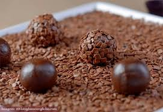
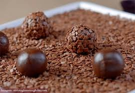
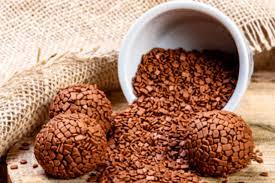

Brigaderia Fenetti
Nosso principal produto é o brigadeiro!
Totalmente fresco e artesanal, boleado na loja, super macio, com ingredientes de alta qualidade.
 

Você sabia?
O brigadeiro é um doce brasileiro, criado na década de 1940, em homenagem ao Brigadeiro Eduardo Gomes, candidato à presidência da república. Foram feitas festas para promover a candidatura, onde foram servidos os docinhos do Brigadeiro. Assim foi adotado o nome brigadeiro para o docinho.
